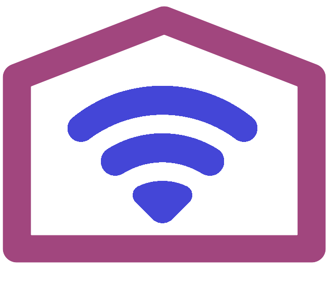

schedule+
Beleuchtung flexibel schalten per Mobil App
schedule+ ermöglicht zeitgesteuertes Schalten von Geräten einfach mit Hilfe eines Web/Browser Dialoges auf dem Smartphone, Tablet oder PC. schedule+ unterstützt WLAN/Tasmota basierende Geräte wie Sonoff.
Der Browser wird nicht nur für den täglichen Betrieb genutzt, sondern auch für die Einstellungen, die Ausgabe von Log-Dateien und die Bedienungshilfen/Dokumentation.
schedule+ ist ein exzellentes Werkzeug die Beleuchtung von Wohnung/Haus auch bei Abwesenheit schalten zu lassen. Dies simuliert Aktivitäten im Haus. Ein Tagesplan kann die Schaltzeiten mit Sonnenauf-/untergang ändern und ebenso lassen sich alle Zeiten durch Zufallswerte variieren.
Eine detaillierte Beschreibung von Bedienung und Installation ist zu finden in der Dokumentation:
▸ Übersicht/ Benutzung und Installation
▸ Job / Tagesplan Anlegen/Ändern
Zur Installation und Anpassung von schedule+ einfach ▸ diesen Schritten folgen.
 Spende was piSchedule Dir wert ist.
Spende was piSchedule Dir wert ist.